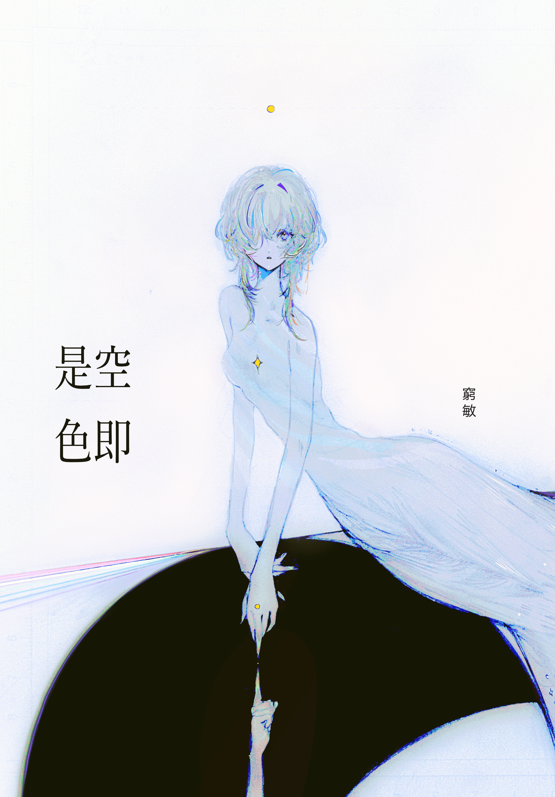
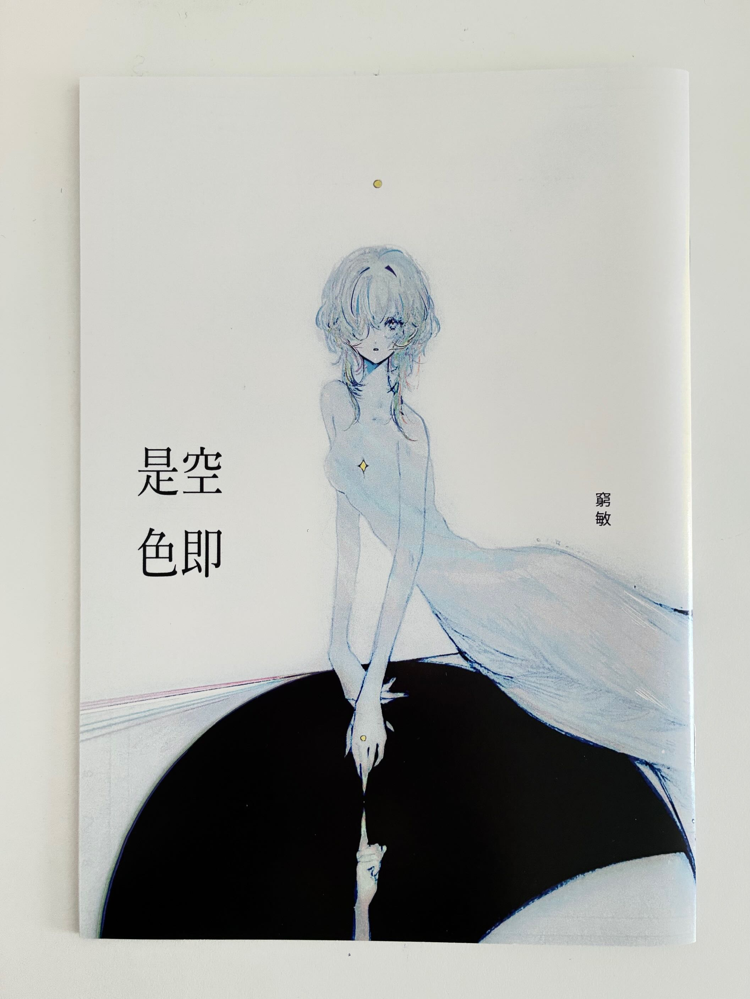
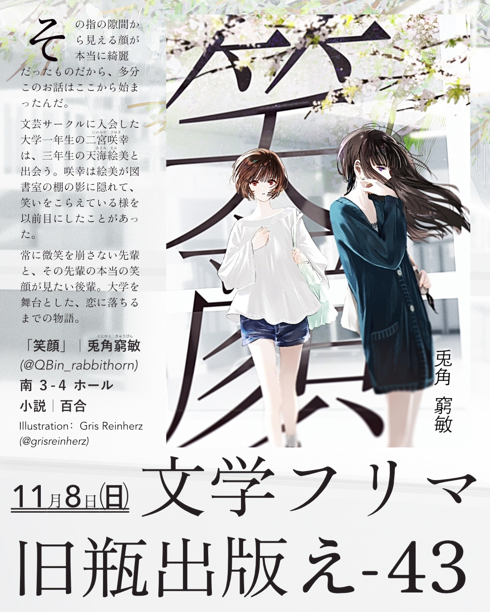
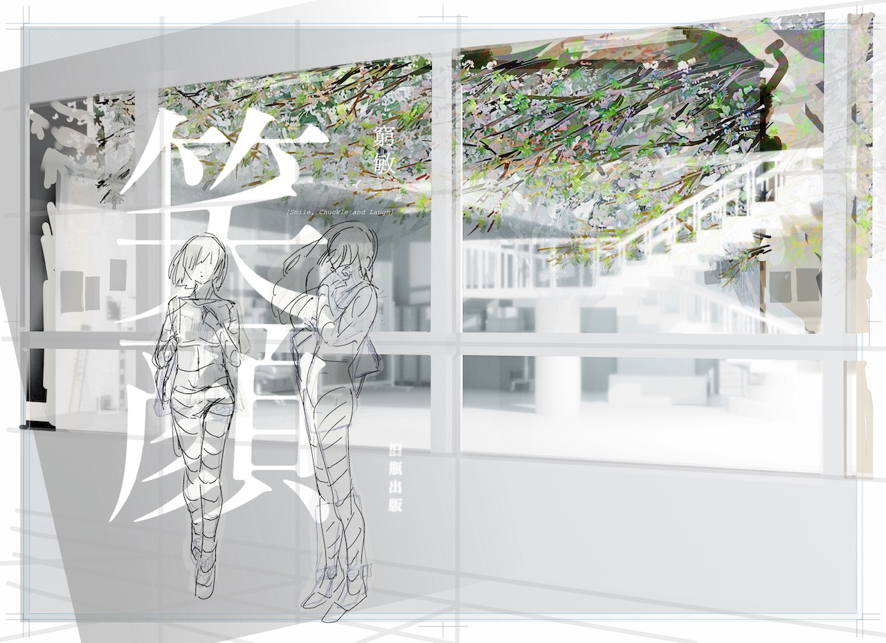

2026年3月
ほのかのしおり｜『空即是色』旧瓶出版
カバーイラスト・ポストカードイラストを制作いたしました。




キャラクター：凪咲ほのか ©2023 凪咲ほのか
Works
2026年3月
ほのかのしおり｜『空即是色』旧瓶出版
カバーイラスト・ポストカードイラストを制作いたしました。


キャラクター：凪咲ほのか ©2023 凪咲ほのか
2026年11月
文学フリマ東京43｜『笑顔』旧瓶出版
キャラクターデザイン・カバーイラスト・告知ビジュアル他デザインを制作いたしました。



